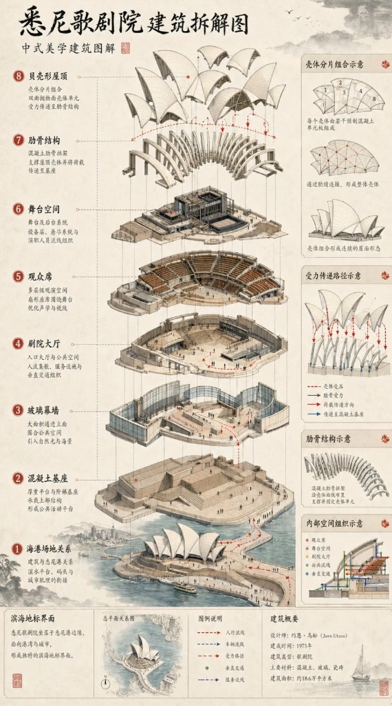
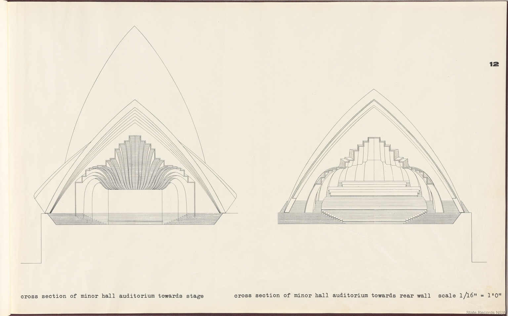
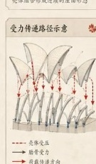
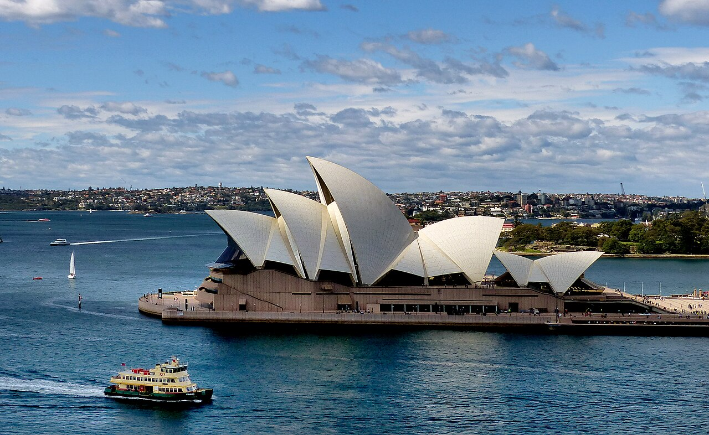

Jørn Utzon & Ove Arup · 1959–1973 · Bennelong Point, Sydney Harbour
High-resolution engineering drawings and axonometric deconstructions documenting the structural evolution of the Sydney Opera House from Jørn Utzon's 1962 "Yellow Book" to modern technical cross-sections.

Complete 8-layer structural breakdown from harbour bedrock and monumental podium up to the spherical precast roof shells.

Original longitudinal cross-section submitted by Jørn Utzon to the NSW Government proving the feasibility of the Spherical Solution.
Precast concrete segments derived from the uniform 75-metre radius sphere, forming continuous curved roof sails.

Vector analysis showing membrane compression, bending moments in radial rib arches, and load dissipation into concrete podium foundations.

Aerial photograph showing the Sydney Opera House crowned by Sydney Harbour waters, Circular Quay, and the Sydney skyline.